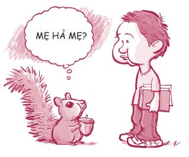

Hãy gọi tôi là Sean.
Tôi là tác giả của quyển sách này và tôi rất vui khi bạn quyết định đọc nó. Đừng lo, quyển sách này không nhàm chán như nhiều quyển khác bạn từng đọc đâu. Tôi đặc biệt viết Bí quyết trưởng thành dành riêng cho các bạn trẻ, về cuộc sống, về các vấn đề và những thứ linh tinh khác xoay quanh cuộc sống của bạn. Trong sách cũng có rất nhiều ảnh minh họa thú vị. (Tôi đã phải trả rất nhiều tiền để thuê các họa sĩ giỏi vẽ đấy.)
Tôi xin đi thẳng vào vấn đề, nội dung quyển sách này chỉ xoay quanh một ý chính:
Có sáu quyết định quan trọng mà các bạn đưa ra trong giai đoạn tuổi teen mang tính quyết định đối với thành bại trong tương lai của chính mình. Vì vậy, hãy lựa chọn thật khôn ngoan, đừng lãng phí.
Tuy nhiên, nếu chẳng may chúng ta quyết định sai thì cũng không phải là tận thế đến nơi đâu. Bạn chỉ cần nhanh chóng điều chỉnh và bắt đầu đưa ra những lựa chọn khôn ngoan hơn là được.
Các bạn trẻ trong thời đại ngày nay đứng trước những thách thức lớn chưa từng có. Nếu ngày trước thế hệ ông bà của các bạn phải trèo đèo lội suối để đến trường, thì ngày nay các bạn phải đương đầu với những kiểu thách thức khác, như tình trạng quá tải thông tin, các loại thuốc kích thích, văn hóa phẩm đồi trụy tràn lan trên mạng, nạn hiếp dâm, khủng bố, cạnh tranh toàn cầu, chứng trầm cảm và áp lực bạn bè. Thế giới ngày nay đã hoàn toàn khác trước!
Dù đã qua tuổi teen (tuy vẫn thích chơi trò bắn đạn giấy), nhưng tôi nhớ rất rõ những thăng trầm mình đã trải qua. Hầu hết các vấn đề mà tôi gặp phải bắt đầu ngay từ lúc tôi mới chào đời. Cha tôi kể: “Con biết không Sean, hồi con mới được sinh ra, hai má con bầu bĩnh đến nỗi bác sĩ không phân biệt được đâu là mông đâu là má để mà tét cho đúng nữa”. Ông không hề nói đùa. Bạn cứ nhìn vào mấy tấm ảnh hồi tôi còn bé tí thì biết. Hai má tôi xệ xuống như hai quả bóng nước. Hẳn các bạn cũng hình dung được tôi bị chọc ghẹo nhiều đến mức nào rồi.

Có một lần, tôi và mấy đứa bạn hàng xóm cùng chơi nhảy bạt lò xo. Chúng tôi thay phiên nhảy và lúc đó đang đến lượt tôi. Khi đó, cô bạn hàng xóm Susan của tôi vì không thể kiềm lòng nên đã thốt lên rằng: “Ôi trời đất ơi, nhìn hai má phúng phính của Sean kìa. Béo phệ luôn!”.
Cậu em trai David đã cố gắng bảo vệ tôi: “Má anh ấy không béo. Đó là cơ bắp đấy chứ”.
Nỗ lực dũng cảm của em ấy hóa ra lại gây ra tác dụng ngược khi mọi người được dịp chọc ghẹo tôi với biệt danh mới: “Má cơ bắp”.
Nỗi thống khổ của tôi vẫn tiếp diễn vào những năm tôi học cấp hai. Tôi ghét năm học lớp Bảy đến nỗi quyết định xóa gần như toàn bộ ký ức về năm học này. Tôi còn nhớ, đến tận lúc đó, hai má tôi vẫn mũm mĩm và có một tên học lớp Tám tên Scott cứ tìm cách gây sự với tôi. Tôi không biết tại sao hắn ta lại nhắm vào tôi. Trước đó tôi chưa từng gặp hắn. Có lẽ là do hắn tin rằng hắn thừa sức hạ đo ván tôi. Ngày nào sau giờ học đại số tôi cũng gặp hắn cùng mấy đứa bạn của hắn đang canh me ở hành lang và thách tôi đánh nhau. Tôi sợ chết khiếp và cố tránh xa hắn ra.
Một ngày nọ, hắn dồn tôi vào góc tường.
“Ê Covey, cái thằng ẻo lả béo ị kia. Sao mày không dám đánh nhau với tao hả?”
“Tôi không biết.”
Rồi hắn ta thụi cho tôi một cái đau điếng vào bụng khiến tôi muốn tắt thở. Tôi sợ đến nỗi không dám đánh trả. Sau lần đó, hắn để tôi yên, nhưng tôi phải đối mặt với cảm giác nhục nhã và tự thấy mình là một kẻ thảm hại. (Nhân tiện nói cho các bạn biết nhé, giờ tôi to con hơn Scott rồi và tôi vẫn đang tìm hắn để trả đũa đấy. Đùa chút thôi!)
Lúc bắt đầu lên cấp ba, tôi vô cùng ngạc nhiên và vui mừng khi gương mặt tôi bắt đầu thay đổi và hai má không còn múp míp như xưa nữa, nhưng những rắc rối mới lại xuất hiện. Đột nhiên tôi phải đưa ra quá nhiều quyết định quan trọng trong khi bản thân vẫn chưa sẵn sàng. Trong tuần đầu tiên đi học, tôi được mời tham gia một câu lạc bộ với các học sinh lớp trên, những người thường uống rượu và có tửu lượng rất cao. Tôi không muốn tham gia, nhưng cũng không muốn làm họ phật lòng. Tôi bắt đầu kết giao thêm bạn bè mới, gặp gỡ thêm nhiều cô gái mới. Một bạn gái thậm chí đã bắt đầu thích tôi. Cô ấy xinh và khá táo bạo khiến tôi vừa hào hứng lại vừa sợ sệt. Quá nhiều câu hỏi xuất hiện. Liệu có nên thích cô bạn này không? Nên đi chơi với những ai? Nên đăng ký những lớp nào? Có nên tham dự bữa tiệc kia? Làm thế nào để vừa lo việc học, vừa chơi thể thao lại có thể dành thời gian cho bạn bè?
Lúc bấy giờ tôi chưa biết đó chính là những quyết định quan trọng nhất mình sẽ đưa ra trong đời.
Tôi nảy ra ý tưởng viết quyển sách này khi thực hiện các cuộc khảo sát trên hàng trăm bạn trẻ ở khắp nơi với câu hỏi: “Những thách thức lớn nhất bạn phải đối mặt là gì?”. Dưới đây là một vài câu trả lời tôi nhận được:
“Mình bị stress. Cố gắng hoàn thành tốt mọi việc chính là thách thức lớn nhất của mình bởi vì mình có quá nhiều việc phải làm.”
“Thách thức lớn nhất của mình là vấn đề tình dục. Mình phải có khả năng đưa ra những lựa chọn đúng đắn ở hiện tại để không phải sống với sai lầm của mình về sau. Thời buổi này có vẻ như nếu chúng ta không quan hệ tình dục ở tuổi teen, chúng ta sẽ bị chọc ghẹo là kẻ hợm hĩnh hoăc những biệt danh tương tự.”
“Cha mẹ. Mình phải đối phó với họ mỗi ngày và việc đó khiến mình kiệt sức.”
“Chuyện học hành và điểm số. Mẹ cứ la mắng mình suốt.”
“Việc chuẩn bị vào đại học. Nước đã sắp đến chân rồi mà mình chưa thật sự suy nghĩ thấu đáo. Mỗi lần nghĩ đến việc đó mình lại thấy đau đầu kinh khủng, thế là mình chẳng dám nghĩ tới nữa.”
“Việc cha mẹ mình ly hôn. Cha mẹ mình cứ cãi nhau suốt về quyền thăm nuôi.”
“Những chuyện thị phi ở trường. Ai đang hẹn hò với ai? Sự nổi tiếng. Ai có kiểu tóc đẹp nhất? Ai có thân hình lực lưỡng nhất? Ai giàu nhất? Ai đang bàn luận về họ? Thật kỳ cục hết sức!”
“Mình lo lắng về sự an toàn của gia đình mình vì giờ đây, có nhiều lúc chúng ta có thể bị giết khi đang đi trên đường. Hầu hết mọi người đều bỏ học vì nghiện hút. Mình rất lo sợ cho em trai và em gái của mình.”
“Vóc dáng và ngoại hình. Mình luôn phải vật lộn với cân nặng của mình.”
“Chính là tiền. Lúc nào mình cũng chỉ có vừa đủ tiền để sống sót.”
“Áp lực bạn bè là vấn đề chính của mình. Mình là đứa rất dễ bị bạn bè tác động, nhất là những đứa hợp cạ.”
“Chuyện hẹn hò. Mình mười bảy tuổi và vẫn chưa có mảnh tình vắt vai. Lũ bạn cứ lải nhải về chuyện này và khiến mình cảm thấy như mình đã không làm việc mình phải làm vậy.”
Tôi đã nghiên cứu kỹ lưỡng các kết quả khảo sát tôi nhận được. Đồng thời tôi cũng phỏng vấn rất nhiều bạn trẻ sinh sống ở nhiều nơi khác nhau trong vòng ba năm. Và một mẫu số chung bắt đầu xuất hiện. Trong số 999 thách thức được nhắc đến, có sáu thử thách nổi cộm hơn cả.
Khi tìm hiểu sâu hơn, tôi phát hiện ra rằng mỗi thách thức đi kèm với một lựa chọn (hoặc một loạt các lựa chọn) cần phải được đưa ra. Trong số các bạn trẻ tôi từng phỏng vấn, một số người đã đưa ra được những lựa chọn sáng suốt, trong khi một số khác thì không. Kết quả là một số bạn trẻ sống trong hạnh phúc và số còn lại gặp rắc rối. Những thách thức này đại diện cho các quyết định mang tính bước ngoặt và hệ quả của chúng là rất lớn. Bạn có thể thấy rõ rằng cách bạn đương đầu với những thách thức này chính là sáu quyết định quan trọng nhất mà bạn đưa ra trong giai đoạn tuổi teen của mình!